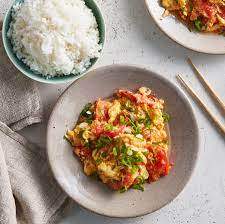

Pork and Peanut Dragon Noodles
Origin: Unknown Source: https://www.budgetbytes.com/pork-peanut-dragon-noodles/ Category: Main Dish, Comfort Food, Quick Meal
This meal is a cheap and easy alternative to the classic cheap college meal: ramen noodles. It cooks up in about 10 minutes, and offers a ton of flavor and a more filling alternative to the typical packaged food. There is also plenty of room for culinary freedom and expression by adding extra sauces or spices, and substituting the pork for something like chicken for a healthier protein option.
Recipe Ingredients:
- 1/4 cup chili garlic sauce
- 1/4 cup soy sauce
- 1/4 cup brown sugar
- 1/2 lb. ground pork
- 2 3oz. packages ramen noodles (seasoning packets discarded)
- 3 green onions, sliced
- 1/4 cup unsalted peanuts, chopped
Recipe Steps:
- Combine the chili garlic sauce, soy sauce, and brown sugar in a bowl.
- Add the ground pork to a skillet and cook over medium heat until it is fully browned.
- Once browned, add the prepared dragon sauce and chopped peanuts.
- Allow the pork and peanuts to simmer in the sauce for another 5 minutes, or until the sauce has reduced by half.
- While the pork is browning, begin boiling water for your noodles.
- Once boiling, add your noodles and cook according tothe package directions.
- Drain the noodles in a colander.
- Once the sauce has reduced and the noodles have drained, add the noodles to the skillet and toss until everything is combined and coated in sauce.
- Top with sliced green onions and serve!
Additional Food images:


Sushi Bake
Origin: Asian Source: Own recipe Category: Main Dish
Do you want easy, quick way to enjoy sushi without having to do all of the work? Try to make our sushi bake, which takes 10 minutes to assemble and 20 minutes to bake in the oven. Our recipe feeds 8 people.
Recipe Ingredients:
- 1 avocado
- 1/2 cup soon sauce
- 2 cups of rice
- 1 tablespoon of rice vinegar
- 3 tablespoons of mayo
- 1 8 oz package of imitation crab
- 1 medium piece of salmon
- 1 cucumber
- 3 tablespoons of sriracha
Recipe Steps:
- Preheat oven to 350 degrees
- Make rice. Mix rice vinegar into rice after it is cooked
- Lay out all of the rice at the bottom of a large baking dish
- Lay out the imitation crab and cucumber on top of the rice
- Mix the imitation crab and 2 TBSP mayo into a crab salad
- Smear the crab salad onto the next layer
- Slice the avocado and lay those on the top of the dish
- Pour the rest of the mayo and sriracha on top
- Bake for 20 minutes
- Enjoy!
Additional Food images:


Tomato and Eggs
Origin: China Source: Own recipe Category: Main Dish
Tomato and eggs is a hot dish which originated from China. It is a simple and fast dish to make, but it has good nutritional value. It is a very satisfying food to eat and popularly served with rice and topped with green onions.
Recipe Ingredients:
- Tomatoes
- Eggs
- Salt
- Sugar
- Cooking oil
Recipe Steps:
- Crack eggs into a bowl and mix until scrambled
- Cut tomatoes into pieces around the size of your thumb
- Oil a hot pan and cook the eggs until satisfied then remove the eggs
- Re-oil the pan and cook the tomatoes until they loosen
- Combine eggs and tomatoes and season with salt and sugar
Additional Food images:


Dead Simple Fried Rice
Origin: American/East Asian Source: Own recipe Category: Main Dish
This Dead Simple Fried Rice recipe is an incredibly modular and tasty dish. At its core, it's just rice, vegetables, protein, and oil. As such, the dish can be modified to serve as many or as few people as needed with a wide variety of food preferences. Experimentation with what specific ingredients you enjoy the most will unlock the full potential of this dish.
Recipe Ingredients:
- Long-grain white rice
- Frozen Vegetables
- Eggs
- (optional) Milk
- Oil of Choice
- Salt
- Soy Sauce
- (optional) Additional Sauce
- (optional) Additional Pre-cooked/Fast-cooking Protein of Choice
- (optional) Additional Fresh Vegetables
Recipe Steps:
- In a rice cooker, add half a cup of rice, a cup of water, a touch of oil, and a pinch of salt. Cook the rice. Tip: if there are tough frozen veggies, such as broccoli, you might want to add the frozen veggies to the integrated steamer basket.
- On high medium heat on your stovetop, in a frying pan, add your chosen oil. Add some milk if desired. Then, scramble the eggs.
- Before the eggs are fully done, add the frozen vegetables. Add fresh vegetables when required so they are fully cooked by the end.
- (Optional) Add the additional protein when required so they are fully cooked by the end.
- Once the rice is done, add it to the pan. Poor your desired amount of Soy Sauce. Stir well.
- (Optional) After that, add your desired amount of additional sauce. Stir well.
- Let the fried rice cook until it is no longer visibly oily and the dish is nice and hot, with the vegetables fully cooked.
- Plate the fried rice. Enjoy!
Additional Food images:


Tomato basil pasta
Origin: Italian Source: https://www.bonappetit.com/recipe/pasta-with-no-cook-tomato-sauce Category: Main Dish
This recipe is a fantastic way to step up your pasta game without taking too much more of your time. It tastes way better than basic pasta with jarred sauce! I originally found this when my sister made it, and got the recipe off of Bon Appetit’s website. PS avoid using the shaker parmesan – I used that the first time I made this and it drew down the quality of the dish.
Recipe Ingredients:
- pasta
- tomatoes (any larger than cherry)
- basil
- red wine vinegar
- extra virgin olive oil
- crushed red pepper
- finely grated block of parmesan
Recipe Steps:
- cut tomatoes along equator
- squeeze juice and seeds out of tomatoes and discard
- cut juiced tomatoes into small-ish pieces
- smush down with large spoon to release some leftover juices
- add in vinegar, olive oil, crushed red pepper and half of parmesan
- let marinate for half an hour
- add basil
- cook pasta
- toss marinade with cooked pasta and serve topped with remaining parmesan
Additional Food images: